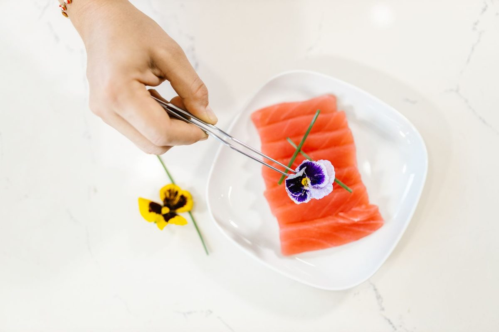
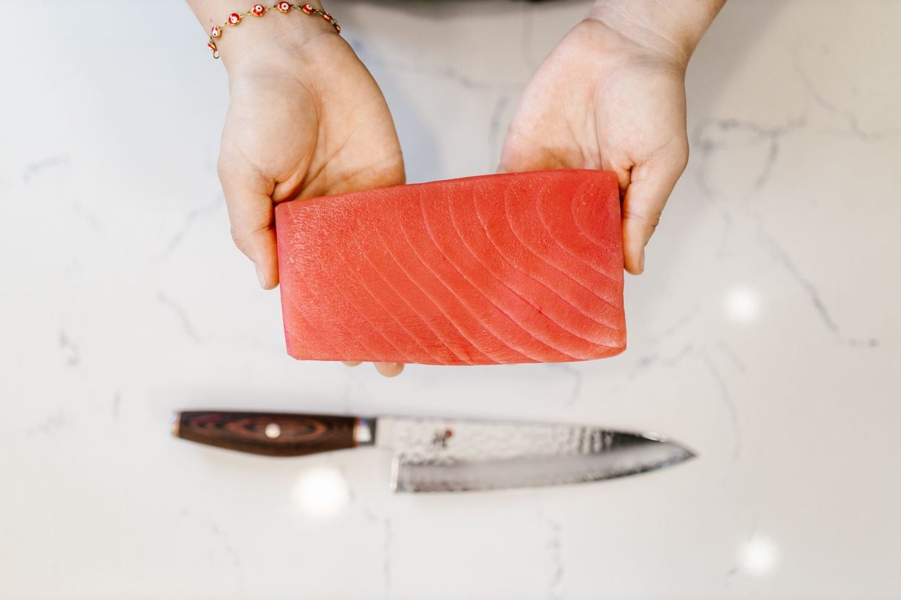
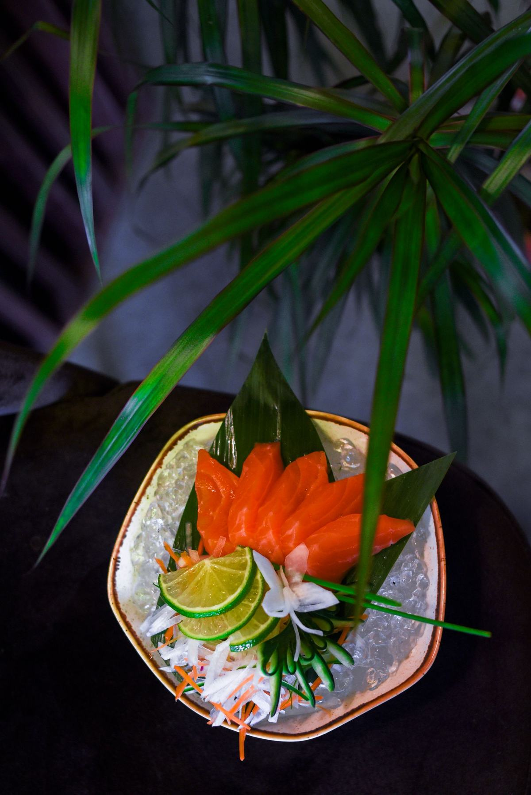
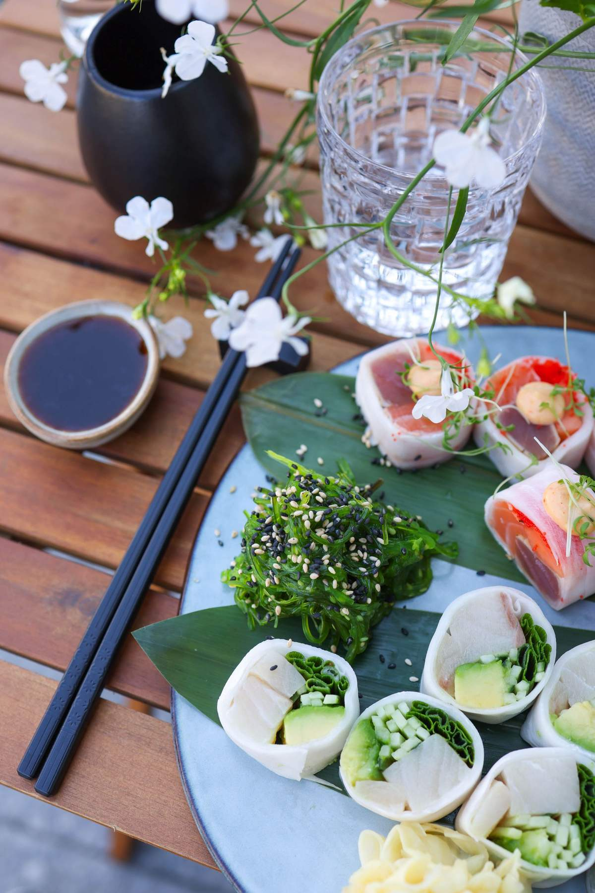

Guides
Where to Buy Sashimi-Grade Tuna in Iloilo
Quick answer
If you are looking for sashimi-grade tuna in Iloilo, visit Ashi's Frozen Goods in Brgy. Pandac, Pavia, near Iloilo City. Our selection includes pre-sliced tuna and a tuna saku bar, which you can order through Facebook Messenger, GrabMart, or by visiting our shop.
Key Takeaways
- Choose between pre-sliced tuna and a saku bar for slicing at home.
- Our menu also includes two salmon options.
- Check the Menu for current product details and prices.
- Order through Facebook Messenger, GrabMart, or visit our physical shop.
- For Messenger delivery arrangements, we book a Maxim rider using the location details you provide.

What Should You Know Before Buying Tuna for Sashimi?
Sashimi is a Japanese-style way of serving fish, typically cut into pieces or slices and eaten without cooking. Because the fish may be served raw, choosing a product and handling it appropriately are important parts of preparation.
The phrase sashimi-grade is commonly used in seafood retail to describe fish presented or intended for sashimi-style use. However, the phrase itself is not a universal certification or a guarantee that a product is safe to eat raw. It should not replace clear product information or appropriate handling instructions.
When choosing frozen tuna, consider the product format and ask about its intended use if you are uncertain. Follow the product's storage and thawing instructions, keep seafood properly chilled, and use clean utensils and preparation surfaces. If you plan to serve it raw, confirm its suitability for that use first. Appearance or a product name alone cannot establish raw-consumption safety.
What Do Sashimi, Saku Bar, and GenSan Tuna Mean?
These terms describe different things, and understanding them can make it easier to choose what to buy.
- Sashimi
- refers to a Japanese-style preparation in which fish is sliced and served without cooking. The presentation is simple, so the quality of preparation, careful handling, and appropriate product selection matter.
- Saku bar
- refers to a block of tuna shaped for slicing into individual portions. It gives the person preparing the meal control over the thickness and size of each slice. It is a format rather than a separate species of tuna.
- GenSan tuna
- refers to tuna associated with General Santos City in Mindanao, one of the best-known tuna ports in the Philippines. The name points to the tuna's origin; it does not, by itself, state a catch date, certification, grade, or suitability for raw consumption.

Which Tuna and Salmon Options Can You Choose?
If you prefer convenience, a pre-sliced pack means you do not need to portion a block yourself. If you enjoy preparing the presentation, a saku bar gives you more control over how the tuna is cut.
Our listed options are:
- Tuna Sashimi (200g - Sliced): ₱300 per pack. A pre-sliced option for customers who want portions ready to arrange for serving.
- Tuna Saku Bar for Sashimi: ₱1,000 per kg. A block format for customers who prefer to slice and portion the tuna themselves.
We also offer salmon selections for customers who would like another seafood option:
- Salmon Sashimi (Sliced 200g)
- Salmon Loin Sashimi (500g)
Product listings, pack sizes, and availability may change. See our Menu for current prices and product details before placing an order.

Should You Choose the Sliced Pack or the Saku Bar?
The right choice depends on how much preparation you want to do.
The sliced pack is convenient when you want pre-cut portions that you can arrange on a plate. The saku bar is better suited to someone who wants to decide the thickness and presentation at home. Use a clean knife and preparation surface, and follow the product instructions.
Neither format removes the need for careful storage and handling. If you intend to serve the tuna raw, confirm that the specific product is suitable for that use rather than relying on its format or name.
How Can You Order from Our Shop?
Here are the ways to order from us, depending on what is most convenient.
- Browse our Menu. Review the available tuna and salmon products, along with current product details and prices.
- Order through Facebook Messenger. Message Ashi's Frozen Goods at m.me/ashifrozengoods. Include the product names and quantities you would like.
- Order through GrabMart. You can also order Ashi's Frozen Goods products on GrabMart. Browse our store in the Grab app for available products and ordering details.
- Arrange Messenger delivery. If requesting delivery through Messenger, send your complete address and a screenshot of your pinned location. We book a Maxim rider, and the delivery fee is based on Maxim's quoted rate for that trip.
- Visit our shop. You can find us at Door 4, AC Arcade Building, Felix Gorriceta Jr. Avenue, Brgy. Pandac, Pavia, 5001 Iloilo. We are open daily from 10:00 AM to 7:00 PM.
For other questions, you can also use our Contact page to reach us.
How Can You Serve Tuna at Home?
For a simple home presentation, first confirm the product's intended use and follow its handling instructions. Arrange pre-sliced pieces on a clean plate. If using a saku bar, slice it with a clean knife on a stable, clean cutting board. Keep the seafood chilled during preparation and serve promptly.
Dipping sauces and other accompaniments can be prepared separately. Avoid leaving seafood at room temperature for extended periods, and follow the product's storage and thawing guidance. These general serving suggestions do not replace product-specific food safety instructions. If you are unsure whether a product is appropriate to serve raw, ask before preparing it that way.

Frequently Asked Questions
Where can I buy sashimi-grade tuna in Iloilo?
You can visit Ashi's Frozen Goods in Brgy. Pandac, Pavia, or order through Facebook Messenger and GrabMart. Our listed tuna options include a pre-sliced pack and a saku bar. Check the Menu for current product details and availability.
What is the difference between sliced tuna and a saku bar?
Sliced tuna is already cut into portions, which can make serving more convenient. A saku bar is a block that you slice yourself, allowing you to choose the thickness and size of the portions.
How much do the tuna products cost?
The listed price is ₱300 per pack for Tuna Sashimi (200g - Sliced) and ₱1,000 per kg for Tuna Saku Bar for Sashimi. Check the Menu for current prices and pack details before ordering.
Does your shop also have salmon?
Yes. Our listed salmon options are Salmon Sashimi (Sliced 200g) and Salmon Loin Sashimi (500g). Check the Menu for current product details and availability.
Can I order through GrabMart or arrange delivery?
Yes. You can order available Ashi's Frozen Goods products through our GrabMart store. Alternatively, message us through Facebook Messenger with your complete address and a screenshot of your pinned location. We book a Maxim rider, and the delivery fee is based on Maxim's quoted rate for that trip.
Does the word sashimi-grade guarantee that tuna is safe to eat raw?
No. The term alone is not a universal certification or a guarantee of raw-consumption safety. Ask about the specific product's intended use and follow its handling, storage, and thawing instructions before serving it raw.
Visit or Contact Ashi's Frozen Goods
To explore our current tuna and salmon selections, see our Menu. You can then order through Facebook Messenger or GrabMart, or visit our physical shop.
Ashi's Frozen Goods
Address: Door 4, AC Arcade Building, Felix Gorriceta Jr. Avenue, Brgy. Pandac, Pavia, 5001 Iloilo
Hours: Daily, 10:00 AM to 7:00 PM
Phone: 0945-962-2304
Email: ashifrozengoods@gmail.com
Facebook Messenger: m.me/ashifrozengoods
GrabMart: Order on GrabMart
We look forward to helping you choose a seafood option for your next meal!